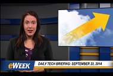
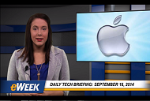

Daily Tech Briefing: Sept. 23, 2014
Microsoft doubles OneDrive storage to entice iPhone 6 owners; Ericsson buying majority stake in PaaS...
Daily Tech Briefing: Sept. 22, 2014
Alibaba instantly becomes new power kid on the IT block; New Android L OS to encrypt data to reduce...
 Daily Tech Briefing: Sept. 19, 2014
Daily Tech Briefing: Sept. 19, 2014Apple delivers iOS 8, which it calls the "biggest iOS release ever"; Apple beefs up iOS 8 privacy and...
 Daily Tech Briefing: Sept. 18, 2014
Daily Tech Briefing: Sept. 18, 2014Apple restores two-factor authentication to iCloud; Microsoft's digital assistant Cortana is spied on...
Daily Tech Briefing: Sept. 17, 2014
Microsoft Dynamics NAV goes Mobile; AMD, Canonical unveil bundled OpenStack Cloud Package; Docker...
Daily Tech Briefing: Sept. 16, 2014
Apple iPhone 6, iPhone 6 Plus preorders top 4 million; WordPress resets 100,000 passwords after...